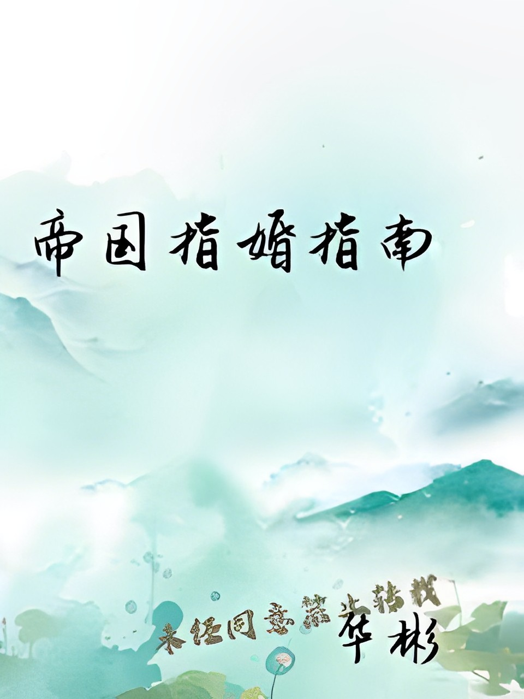

Cuando el almirante imperial Song Shiming derrotó al enemigo, la gente pensó que recibiría la Medalla Suprema de Honor del Imperio. Sin embargo, el emperador sólo le nombró un matrimonio miserable.
Con un omega huérfano y sin valor.
¡Todo el mundo sabe que esto es una conspiración política!
Acusaron al inocente omega de estar involucrado en este vórtice con el despiadado monarca para enfrentar al general; pero no sabían que detrás de lo que no podían ver, el pequeño omega estaba siendo abrazado tiernamente por el alfa, quien estuvo compitiendo con él durante más de diez años, lamiendo las lágrimas que se derramaban por ser amado excesivamente por él...